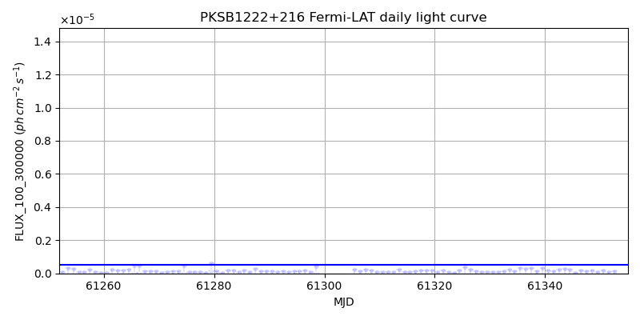
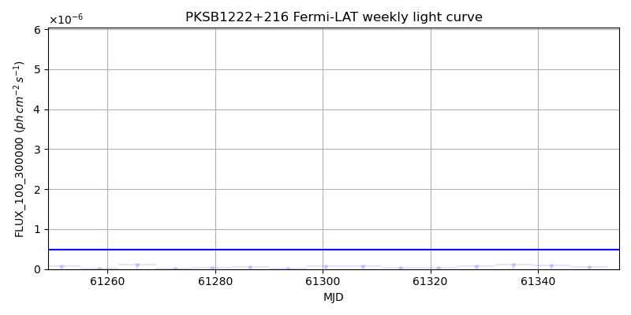
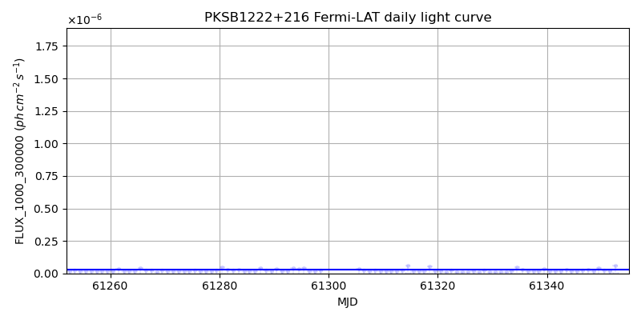
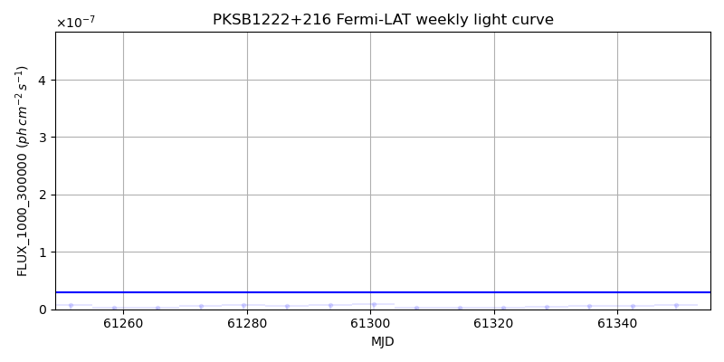

LAT Lightcurve site: https://fermi.gsfc.nasa.gov/ssc/data/access/lat/msl_lc/source/PKS_B1222p216
NED: Query
Time of last update of this page: UT: 2026-11-13 16:25 (MJD: 61357.684)
| Property | Value |
|---|---|
| R.A. | 12:24:54.48 |
| Dec. | 21:22:48.0 |
| z | 0.434 |
| 3FGL SpectrumType | LogParabola |
| 3FGL PL Index | |
| 3FGL Flux_100_300000 | 4.93e-07 1 / (s cm2) |
| 3FGL Flux_1000_300000 | 2.92e-08 1 / (s cm2) |
| 3FGL Flux >200 GeV | 1.62e-11 1 / (s cm2) |
| 3FGL Extrap. Crab >200 GeV | 0.07 |
| 3FGL Flux After EBL Absorption >200GeV | 3.51e-12 1 / (s cm2) |
| 3FGL EBL Crab Fraction >200GeV | 0.01 |

| MJD | dMJD | Flux | dFlux | Frac3FGL | FracCrab>200GeV | EBLFracCrab>200GeV |
|---|---|---|---|---|---|---|
| 61348.50 | 0.50 | 1.62e-07 | 0.00e+00 | 0.00 | 0.00 | 0.00 |
| 61349.50 | 0.50 | 7.13e-08 | 0.00e+00 | 0.00 | 0.00 | 0.00 |
| 61350.50 | 0.50 | 1.97e-07 | 0.00e+00 | 0.00 | 0.00 | 0.00 |
| 61351.50 | 0.50 | 8.22e-08 | 0.00e+00 | 0.00 | 0.00 | 0.00 |
| 61352.50 | 0.50 | 1.45e-07 | 0.00e+00 | 0.00 | 0.00 | 0.00 |

| MJD | dMJD | Flux | dFlux | Frac3FGL | FracCrab>200GeV | EBLFracCrab>200GeV |
|---|---|---|---|---|---|---|
| 61321.50 | 3.50 | 3.85e-08 | 0.00e+00 | 0.00 | 0.00 | 0.00 |
| 61328.50 | 3.50 | 6.81e-08 | 0.00e+00 | 0.00 | 0.00 | 0.00 |
| 61335.50 | 3.50 | 1.13e-07 | 0.00e+00 | 0.00 | 0.00 | 0.00 |
| 61342.50 | 3.50 | 8.85e-08 | 0.00e+00 | 0.00 | 0.00 | 0.00 |
| 61349.50 | 3.50 | 4.84e-08 | 0.00e+00 | 0.00 | 0.00 | 0.00 |

| MJD | dMJD | Flux | dFlux | Frac3FGL | FracCrab>200GeV | EBLFracCrab>200GeV |
|---|---|---|---|---|---|---|
| 61348.50 | 0.50 | 1.44e-08 | 0.00e+00 | 0.00 | 0.00 | 0.00 |
| 61349.50 | 0.50 | 4.11e-08 | 0.00e+00 | 0.00 | 0.00 | 0.00 |
| 61350.50 | 0.50 | 2.31e-08 | 0.00e+00 | 0.00 | 0.00 | 0.00 |
| 61351.50 | 0.50 | 1.53e-08 | 0.00e+00 | 0.00 | 0.00 | 0.00 |
| 61352.50 | 0.50 | 5.71e-08 | 0.00e+00 | 0.00 | 0.00 | 0.00 |

| MJD | dMJD | Flux | dFlux | Frac3FGL | FracCrab>200GeV | EBLFracCrab>200GeV |
|---|---|---|---|---|---|---|
| 61321.50 | 3.50 | 2.69e-09 | 0.00e+00 | 0.00 | 0.00 | 0.00 |
| 61328.50 | 3.50 | 4.48e-09 | 0.00e+00 | 0.00 | 0.00 | 0.00 |
| 61335.50 | 3.50 | 6.55e-09 | 0.00e+00 | 0.00 | 0.00 | 0.00 |
| 61342.50 | 3.50 | 6.37e-09 | 0.00e+00 | 0.00 | 0.00 | 0.00 |
| 61349.50 | 3.50 | 7.69e-09 | 0.00e+00 | 0.00 | 0.00 | 0.00 |
--------------------------------------------------------- Using user-supplied coords: 12:24:54.48 21:22:48.0 2000 --------------------------------------------------------- FLWO UT night of: 2026-11-14 Local Sid. @ Midnight: 03:09 Sunset (-15.0) (local, UT): 18:35 01:35 Sunrise (-15.0) (local, UT): 05:42 12:42 Moonrise (local, UT): Moonset (local, UT): 20:50 03:50 Moon phase: 0.22 --------------------------------------------------------- AzTime LSID UT Obj_el Obj_az Mn_el Mn_az Sep. --------------------------------------------------------- 18:35 21:44 01:35 -24.4 318.3 20.1 218.2 106.9 19:05 22:14 02:05 -28.4 324.7 16.0 223.7 107.0 19:35 22:44 02:35 -31.7 331.8 11.6 228.6 107.2 20:05 23:14 03:05 -34.4 339.6 6.9 233.2 107.4 20:35 23:44 03:35 -36.2 347.9 2.0 237.3 107.5 21:05 00:14 04:05 -37.0 356.6 -2.2 241.2 107.7 21:35 00:44 04:35 -36.9 5.3 -9.0 244.8 107.9 22:05 01:14 05:05 -35.8 13.9 -14.6 248.2 108.1 22:35 01:44 05:35 -33.9 22.1 -20.4 251.4 108.3 23:05 02:14 06:05 -31.1 29.7 -26.2 254.5 108.6 23:35 02:44 06:35 -27.5 36.7 -32.1 257.5 108.8 00:05 03:14 07:05 -23.4 43.0 -38.1 260.6 109.0 00:35 03:45 07:35 -18.8 48.7 -44.2 263.8 109.3 01:05 04:15 08:05 -13.9 53.8 -50.2 267.1 109.6 01:35 04:45 08:35 -8.5 58.5 -56.3 270.9 109.9 02:05 05:15 09:05 -1.8 62.7 -62.4 275.3 110.2 02:35 05:45 09:35 3.1 66.7 -68.4 281.1 110.5 03:05 06:15 10:05 8.9 70.4 -74.2 289.9 110.8 03:35 06:45 10:35 14.9 74.0 -79.6 306.2 111.1 04:05 07:15 11:05 21.1 77.4 -83.2 343.5 111.4 04:35 07:45 11:35 27.4 80.8 -82.1 35.1 111.7 05:05 08:15 12:05 33.7 84.3 -77.4 61.2 112.0 05:35 08:45 12:35 40.1 87.9 -71.8 73.4 112.3 05:42 08:52 12:42 41.5 88.7 -70.5 75.2 112.4 --------------------------------------------------------- Dark hours >55 deg.: 0.00